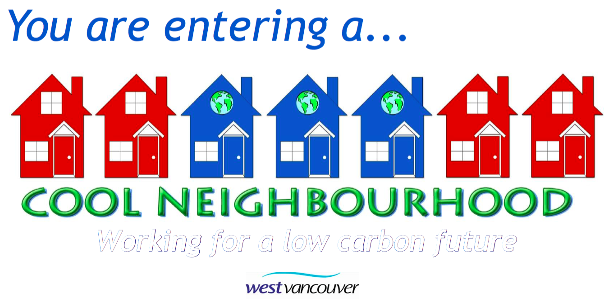
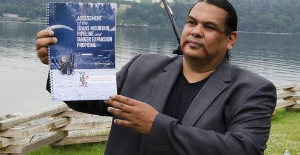

The Great Climate Race Platform
Canada's most inventive climate fundraiser - mobilizing 15,000+ runners and donors to directly fund solar and wind projects through a first-of-its-kind peer-to-peer platform. The real finish line? Proving that climate action could be joyful, viral, and relentlessly practical.
The Innovation
We turned individual climate anxiety into collective climate action by gamifying renewable energy fundraising. Participants didn't just run for a cause - they ran to build specific solar panels and wind turbines, with real-time tracking of both kilometers and kilowatts.
Impact & Replication
- 15,000+ participants across multiple events
- Direct renewable energy funding with measurable impact
- Peer-to-peer platform became a model for other climate initiatives
- Viral engagement model that others could adapt and scale
Cool Neighborhoods Program
Reimagined climate action at the hyper-local level; turning 27 BC neighborhoods into living labs for low-carbon living, community resilience, and radical neighbor-to-neighbor change. Subject of Royal Roads white paper, awards from City of West Vancouver, United Nations recognition.
The Replicable Model
We created a neighborhood engagement toolkit that any community could adapt: thermal imaging parties, group discount programs, peer learning networks, and social events that made energy efficiency actually fun and social.
The secret sauce wasn't the technology - it was making climate action feel like a neighborhood block party instead of homework.
Scalable Impact
- 27+ neighborhoods across BC adopted the model
- 520+ households took concrete action
- 8,257 tonnes of GHG emissions cut
- Open-source toolkit for other communities to replicate
- Policy influence at municipal and regional levels
Interactive Climate Action Planning Tools
We transform dense IPCC reports into interactive dashboards where communities create their own climate action plans using familiar budgeting tools. Instead of top-down mandates, people decide which emissions cuts work best for their communities.
The Problem
Climate action plans were failing because they felt like homework assignments from city hall rather than community-driven solutions. People needed agency, not lectures.
Our Solution Framework
- Interactive budget tools - Communities allocate resources across competing priorities
- Scenario modeling - Test different approaches and see real-world impacts
- Local customization - Rural vs. urban, different economic contexts
- Implementation pathways - From planning to action with clear next steps
Replicable Results
Communities create their own tailored climate plans with genuine buy-in. A rural town prioritizes farmland solar over bike lanes, while a dense city focuses on transit upgrades. The tool adapts to local priorities while maintaining scientific rigor.
Rapid Response Systems
When crises erupt and conventional channels fail, we step in with systems that can be activated quickly and scaled across campaigns. Our rapid response toolkit has been tested in pipeline fights, election campaigns, and corporate accountability work.
The Toolkit
- Multi-channel messaging systems - Coordinated response across platforms
- Research and counter-narrative frameworks - Fast fact-checking and narrative development
- Coalition activation protocols - Pre-built networks ready for mobilization
- Legal and regulatory pressure points - Strategic intervention opportunities
Proven Results
- Tanker Free BC - Delayed pipeline construction for a decade
- Raven Coal Mine - Permits revoked, 440K tonnes coal left in ground
- Thor Chemicals - Site shuttered, 8,000+ workers protected
- Election rapid response - Coordinated counter-disinformation campaigns
Indigenous-Led Planning Frameworks
Supporting Indigenous sovereignty means ensuring Nations lead their own planning processes. We've developed frameworks that respect Indigenous data sovereignty while providing technical support for community-driven climate and energy planning.
Nation-Designed Approach
Communities maintain full control over their stories, data, and decisions while accessing technical tools for energy transition planning. The framework integrates clean energy with housing, transport, and cultural priorities - all designed to train local crews and create exportable models.
Sovereignty-Respecting Results
- Community ownership of planning processes and outcomes
- Holistic scoring - costs, emissions, jobs, wellbeing, community support, risk, innovation
- Exportable blueprints for other Nations across Canada
- Capacity building within communities for ongoing planning